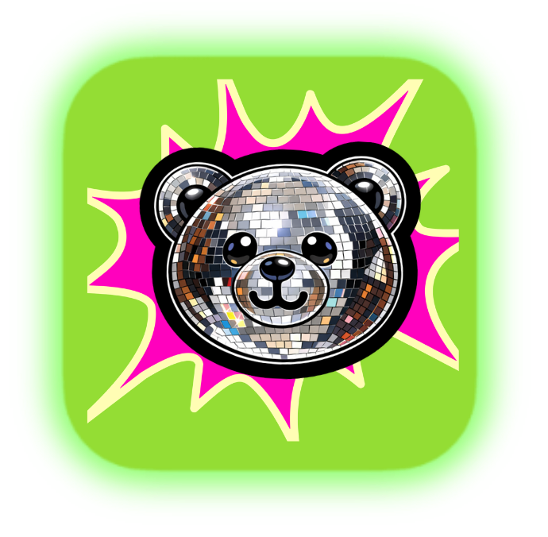
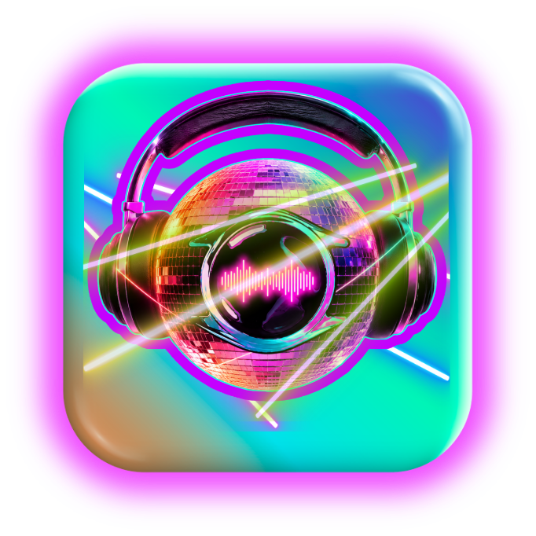

Osos Discos — Cameron Kelly & Marshall T, Philadelphia DJs
Do you need a DJ??
We can help with
that!
Other ways to connect!
Resident Advisor: public events
SoundCloud: get familiar with how we sound!
Twitch: live streams on Thursdays,
7–9pm
Cameron Kelly FB: social connections, event updates
Osos Discos IG: it's brand new
Our EPK page: hear our story

Tell us about the event. Schedule a consult.
Browse the rentables. Cart builder for sound and shelter
Our flagship DJ tool: FableGear. Designed to run database-first, but work at folder depth…

How about a duplicate finder, track tagger, key/BPM finder, file-organizer and…
USBANLZ-building, Pioneer-recognized playlist export and library database: All. In. One.
Check out
FableGear:
the
custom DJ
library
maintenance
tool
Learn
more
about
the DJs
at their
EPK
page
Tip the
sound guy


 Check out
Check out